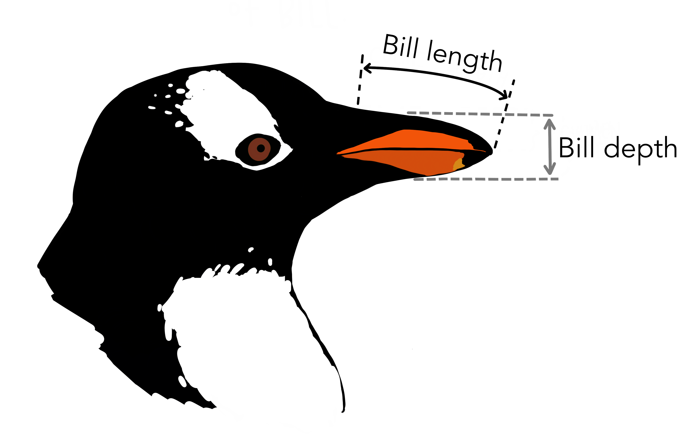
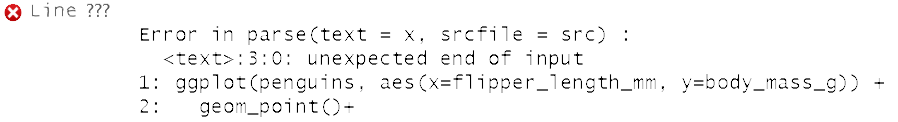

| Layer | Function | Explanation |
|---|---|---|
| Data | ggplot( ) | initialize plot and define dataset first |
| Aesthetics | aes( ) | how variables are mapped |
| Geometries | geom_*( ) | how data is conveyed |
| Facets | facet_*( ) | separates plots by categories |
| Statistics | stat_*( ) | statistical transformations |
| Coordinates | coord_*( ) | customize coord system |
| Theme | theme( ) | customize non-data components |
Day 03
Onto the real fun now! Today’s lesson covers Section 2.0 - 2.3 and focuses on making scatterplots with ggplot().
Agenda
~ 15 min Slide deck
~ 25 min Students work on Activity 02
~ 10 min Work through a select problem in detail from the activity as a class
Slide Deck
Today’s goals
- Create a scatterplot
- Properly describe a scatterplot
- Change aesthetics such as color and shape in your plot
- Solve overplotting issues

Artwork by @allison_horst
The Grammar of Graphics
Defines a set of rules for constructing statistical graphics by combining different types of layers.

Only the first three layers are essential components that must be defined when building a graphic.
The Palmer Penguins Dataset:
```{r}
library(palmerpenguins)
glimpse(penguins)
```Rows: 344
Columns: 8
$ species <fct> Adelie, Adelie, Adelie, Adelie, Adelie, Adelie, Adel~
$ island <fct> Torgersen, Torgersen, Torgersen, Torgersen, Torgerse~
$ bill_length_mm <dbl> 39.1, 39.5, 40.3, NA, 36.7, 39.3, 38.9, 39.2, 34.1, ~
$ bill_depth_mm <dbl> 18.7, 17.4, 18.0, NA, 19.3, 20.6, 17.8, 19.6, 18.1, ~
$ flipper_length_mm <int> 181, 186, 195, NA, 193, 190, 181, 195, 193, 190, 186~
$ body_mass_g <int> 3750, 3800, 3250, NA, 3450, 3650, 3625, 4675, 3475, ~
$ sex <fct> male, female, female, NA, female, male, female, male~
$ year <int> 2007, 2007, 2007, 2007, 2007, 2007, 2007, 2007, 2007~

Artwork by @allison_horst
How would you describe the scatterplot?

- Positive “moderately linear”.
- Teaching tip: draw an oval around the points. The thinner the oval the stronger the relationship. An approximate circle means no relationship.
- Emphasize using the “buzz words” from the previous slide.
- Some students may have noticed what appears to be three clusters! We will look at clusters in the next example.
How would you describe the scatterplot?

- Overall negative “weakly linear”.
- Teaching tip: draw an oval around the points.
But the clusters don’t appear to be negative… what variable might be causing these two separate clusters?
- Since there are two your first instinct is probably the variable
sex
But sex is not the cause of the clusters. Try another categorical variable that might cause different flipper and bill length.
Example 2: Describing scatterplots
```{r}
#| fig-cap: "Fig C"
ggplot(penguins, aes(x=flipper_length_mm, y=bill_depth_mm, color = sex)) +
geom_point()
```Warning: Removed 2 rows containing missing values (geom_point).
```{r}
glimpse(penguins)
```Rows: 344
Columns: 8
$ species <fct> Adelie, Adelie, Adelie, Adelie, Adelie, Adelie, Adel~
$ island <fct> Torgersen, Torgersen, Torgersen, Torgersen, Torgerse~
$ bill_length_mm <dbl> 39.1, 39.5, 40.3, NA, 36.7, 39.3, 38.9, 39.2, 34.1, ~
$ bill_depth_mm <dbl> 18.7, 17.4, 18.0, NA, 19.3, 20.6, 17.8, 19.6, 18.1, ~
$ flipper_length_mm <int> 181, 186, 195, NA, 193, 190, 181, 195, 193, 190, 186~
$ body_mass_g <int> 3750, 3800, 3250, NA, 3450, 3650, 3625, 4675, 3475, ~
$ sex <fct> male, female, female, NA, female, male, female, male~
$ year <int> 2007, 2007, 2007, 2007, 2007, 2007, 2007, 2007, 2007~Now describe the scatterplot: Weakly positive linear for Adelie and Chinstrap species. These two species appear to be similar with the center of the grouping having a flipper length around 190 mm and bill depth around 18.5mm. Gentoo also has a positive linear relationship, perhaps more moderate than weak. Gentoo have a longer flipper but shorter bill depth than the other 2 species.
Common Coding Errors
```{r}
#| eval: false
ggplot(penguins, aes(x=flipper_length_mm, y=bill_depth_mm)) +
geom_point() +
```
Plus sign to nowhere. What would happen if you type “1+2+” into a calculator? An error!
```{r}
#| eval: false
ggplot(penguins, aes(x=flipper_length_mm, y=bill_depth_mm) +
geom_point()
```
All parenthesis must me closed!
```{r}
#| eval: false
ggplot(Penguins, aes(x=Flipper_length_mm, y=Bill_depth_mm) +
geom_point()
```
R is case sensitive! Make sure the data and variable names match EXACTLY.